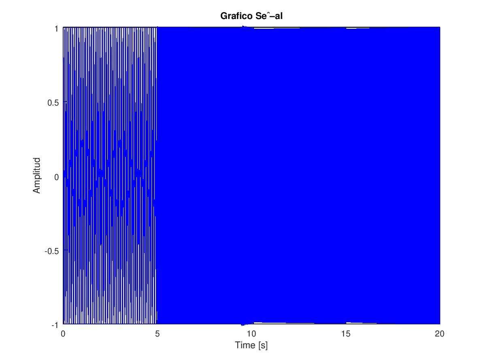
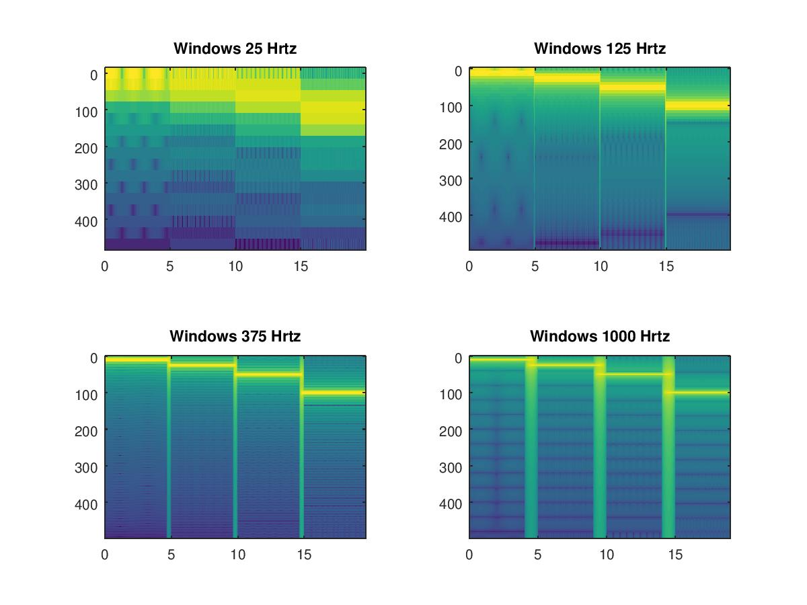

Explicacion
Consiste en una Transformada de furier rapida (FFT) para una señal con la funcion specgram Se mostrara un ejemplo de como usar la funcion specgram en pctave, aplicada a alguna señal que no es continua.
Será contrastado con variadas velocidades de la ventana. Y veremos como cambia el resultado de dicha FFT.
Informacion para los preparativos previos
*Como instalar un paquete* Sobre linux acceda a una terminal y teclee :
sudo apt-get install liboctave-dev
En la consola de octave instale los siguientes paquetes:
Con los siguientes comandos:
pkg install -forge signal pkg install -forge specfun
Cargamos los nuevos paquetes :
pkg load signal specfun
y a estamos preparados para empezar
Transformada de fourier deslizante
Encuentre la transformada de Fourier deslizante para la siguiente funcion compuesta por una función hecha de cuatro partes continuas:
$$f(x)= \left\{ \begin{array}{lcc} cos(2 \pi 10 t) & si & 0s < t < 5s \\ cos(2 \pi 25 t) & si & 5s < t < 10s \\ cos(2 \pi 50 t) & si & 10s < t < 15s \\ cos(2 \pi 100 t) & si & 15s < t < 20s \end{array} \right.$$ Hagalo para 4 velocidades diferentes de la ventana que hace la FFT en esta funcion. Note el contraste del cambio.
T=20; Fs=1000; t=linspace(0,T,T*Fs); x=[]; for n=1:length(t) x1 = cos(2*pi*10*t(n))*heaviside(5-t(n)); x2 = cos(2*pi*25*t(n))*heaviside(t(n)-5)*heaviside(10-t(n)); x3 = cos(2*pi*50*t(n))*heaviside(t(n)-10)*heaviside(15-t(n)); x4 = cos(2*pi*100*t(n))*heaviside(t(n)-15); x=[x,x1+x2+x3+x4]; end vel=25; %windows velociti window = fix(vel*Fs/1000); fftn = 2^nextpow2(window); step = fix(2*Fs/1000); [a,b0,c0] = specgram(x, 2^nextpow2(window), Fs, window, window-step); a0 = abs(a); vel=125; window = fix(vel*Fs/1000); fftn = 2^nextpow2(window); step = fix(2*Fs/1000); [a,b1,c1]=specgram(x, 2^nextpow2(window), Fs, window, window-step); a1 = abs(a); vel=375; window = fix(vel*Fs/1000); fftn = 2^nextpow2(window); step = fix(2*Fs/1000); [a,b2,c2]=specgram(x, 2^nextpow2(window), Fs, window, window-step); a2 = abs(a); vel=1000; window = fix(vel*Fs/1000); fftn = 2^nextpow2(window); step = fix(2*Fs/1000); [a,b3,c3]=specgram(x, 2^nextpow2(window), Fs, window, window-step); a3 = abs(a); % Graficos figure (1);;title('Grafico Señal'); plot(t,x,'b-');title('Grafico Señal');xlabel('Time [s]');ylabel('Amplitud') figure (2);title ('FFT ventana deslizante'); subplot(2,2,1);imagesc (c0, b0, log(a0));title ('Windows 25 Hrtz'); subplot(2,2,2);imagesc (c1, b1, log(a1));title ('Windows 125 Hrtz'); subplot(2,2,3);imagesc (c2, b2, log(a2));title ('Windows 375 Hrtz'); subplot(2,2,4);imagesc (c3, b3, log(a3));title ('Windows 1000 Hrtz');
vemos que mientras mas rapido pasa la ventana menos ruidoza es la vetana ya que no ve tanto mas significativamente los los bruscos cambios que poosee esta funcion.
Porfavor, acceda a la documentacion: